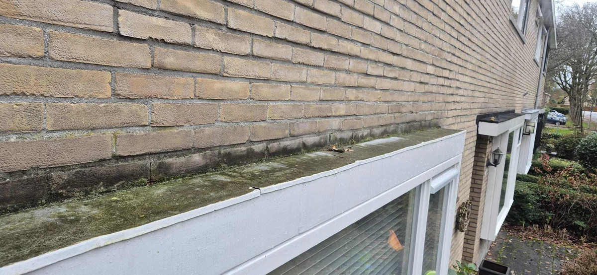
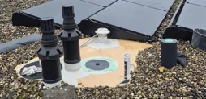
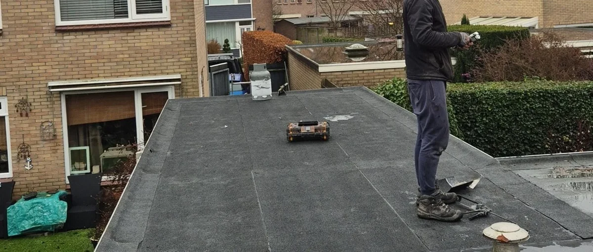

Diensten plat dak
Een overload aan informatie is soms lastig te doorgronden. Op deze pagina wijzen wij u de weg door alle diensten voor uw platte dak die wij als vakmanschap...
- ✓Uw daklood garandeert een waterdichte aansluiting of is deze aan vervanging toe?
- ✓Lekkage aan uw dak? Vaak kan het gerepareerd worden, repareren in uw geval mogelijk, u leest het hier!
- ✓Overlagen voorkomt vervangen, is uw dak geschikt om te overlagen? U leest het hier!

Situaties uit de praktijk
Beelden van dakdetails, slijtage of werkzaamheden die passen bij dit onderwerp.


Uw kompas door onze diensten voor uw plat dak
Een overload aan informatie is soms lastig te doorgronden. Op deze pagina wijzen wij u de weg door alle diensten voor uw platte dak die wij als vakmanschap uitoefenen. Onderstaand navigeert u eenvoudig naar de dienst die u nodig heeft. Niet kunnen vinden wat u zocht, of wilt u meer informatie? Onze experts staan voor u klaar en staan u graag te woord!
Daklood vervangen
Uw daklood garandeert een waterdichte aansluiting of is deze aan vervanging toe?
Plat dak repareren
Lekkage aan uw dak? Vaak kan het gerepareerd worden, repareren in uw geval mogelijk, u leest het hier!
Plat dak overlagen
Overlagen voorkomt vervangen, is uw dak geschikt om te overlagen? U leest het hier!
Plat dak vervangen
Wanneer repareren of overlagen niet meer mogelijk is, is het plat dak vervangen de enige optie!
Dakdekker of vrijblijvend advies nodig?
Contact opnemen is altijd kosteloos en vrijblijvend. U ontvangt binnen 24 uur een reactie, onze experts staan voor u klaar!
Wilt u zekerheid over uw dak?
Laat de situatie beoordelen voordat schade groter wordt. U krijgt helder advies over wat nodig is, wat kan wachten en welke oplossing duurzaam is.